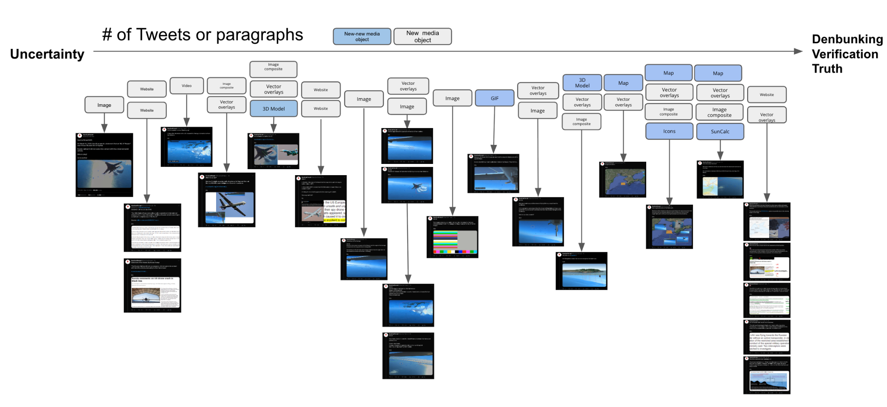
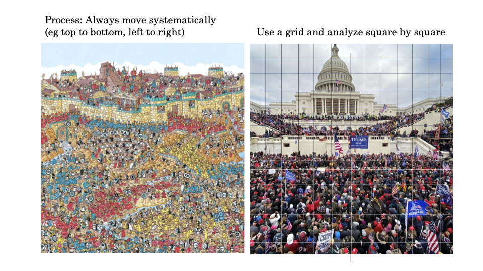
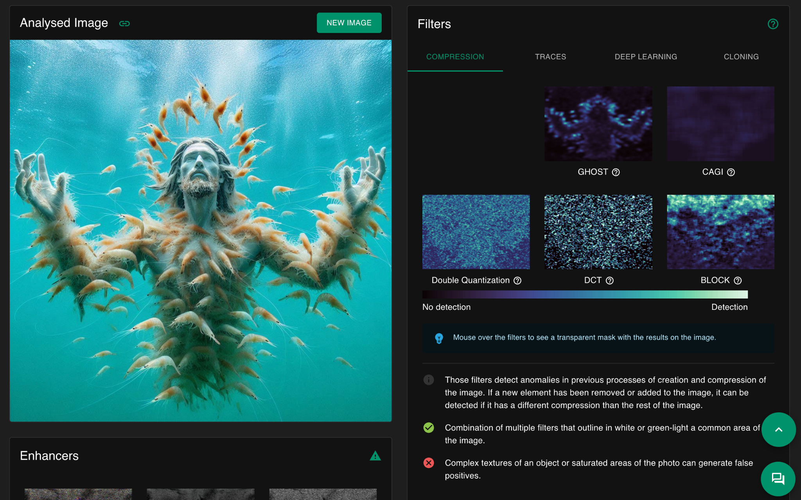
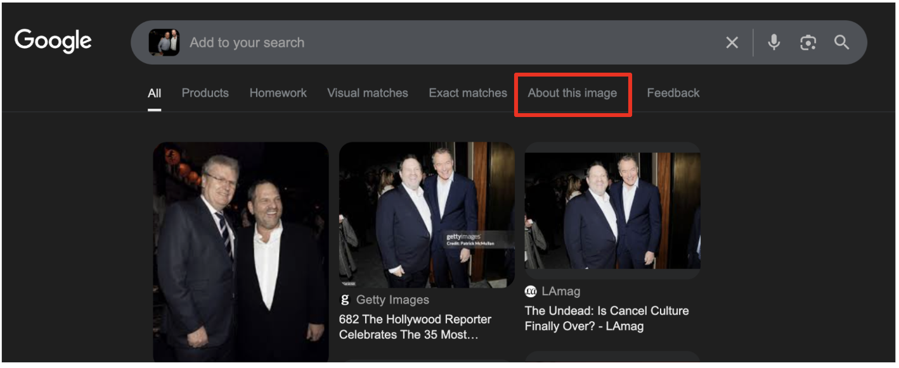
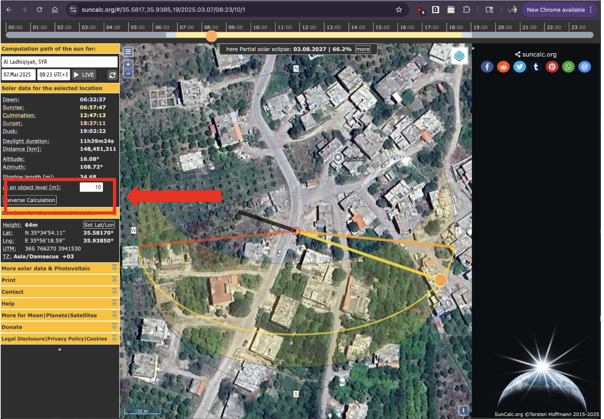

Worksheet · Verify · July 2025
Digital Verification
Pre-requisites
Install a Chromium-based browser. It can be Chrome, Brave, Arc, etc. This is not an endorsement!
Install the InVid-WeVerify plugin on the browser you just installed. This is an endorsement 😀
Goals:
Learning the digital verification workflow.
Learning how to archive and report the results of the verification process.
Introduction
Verifying information is one of the most important skills as a digital investigator. In very practical terms, it implies figuring out whether one piece of data in your hands or screen (photo, video, text, sound) can be trusted as input for different types of decision making: can you use it to back up the argument that something happened (or did not)? Can you use it to build a narrative that someone did something (or did not)? For verification purposes, the goal is not to ascertain whether something is true or not, but rather to clarify whether what is being said about it or what you want to use it for checks out.
Verification is about testing the robustness of the connections between data and claims. In other words, you are examining whether the relationship between a piece of digital content and the claims being made about it can withstand scrutiny. When someone says a video shows the displacement of a particular ethnic group, or that a photo captures police brutality, or that a document proves institutional corruption, verification implies asking “do these connections hold up?” Can you trace the logical, coherent and consistent relationships between the digital content, its metadata, witness accounts, official documentation, other contextual information and the physical world that support what’s being claimed?
What we need to be aware of is that different verification contexts require different methods to demonstrate the adequacy and robustness of the connections you find. A court demands different types of evidence chains than a newsroom, which differs from what you would write on an academic paper. Each context has its own standards for what makes connections trustworthy, its own procedures for what constitutes evidence and proof, and its own requirements for how claims must be substantiated.
Let’s take the most cliche example. You get a message from an old family member who is not particularly tech-savvy. They are worried about an invasive species making their way into their town and wreaking havoc on the environment. They share with you a video showing an army of frogs jumping around what looks like a devastated rur-urban area, and people desperately crying on camera because their fields and houses are in peril. “This is the town next to us!!” your loved one says in their message. Verification here may mean different things depending on what you would like to do with your analysis of the video. Do you want to calm down your family member by showing them that the video is fake? Do you want to use it as an example of the impact of AI-slop? Do you want to use it as evidence in a trial against the frog farm that set the animals loose?
In any of those cases you would be testing the same fundamental connection: between the video and the claim that frogs have already destroyed one town and are nearing your family member’s. But the methods for testing the robustness of the ties would differ considerably. To only reassure your family member, a quick reverse image search showing the video originated many years ago might suffice. To use it as an argument about the dangers of AI-slop you could make a visual analysis focused on the type of inconsistencies typically found in AI content, or test for AI watermarks. To use it as legal evidence, you’d require to follow the high standards of the Berkeley Protocol, and be particularly careful about the chain of custody of the data. But in all cases what you’re doing is testing: do these connections check out with other trustworthy data points?
Take some time to analyze this example from the OSINT collective GeoConfirmed (and summarized in the image below). This collective emerged during the golden age of Twitter OSINT, before Musk acquired the platform, and their practice helped in many ways to set the standards of what a public piece of open source intelligence should look like (though not one that could be used “as is” for legal purposes). The example shows the process of verifying the claim that a video captured a US Reaper drone being hit by a Russian SU-27 in early March 2023 over international air space (Russian authorities would later claim that their aircraft only released fuel over the US drone because it violated Russian airspace).

The Twitter thread is a great example of the “test the connections” approach that verification consists of: does the data presented along with the claim support the claim and resist the test of a counter narrative? Forget for a bit that the original video was posted by the US government, which is (usually) a more trustworthy source than the Russian. How does GeoConfirmed verify the claim? GeoConfirmed dissects the video in its multiple elements, and compares them against other trustworthy sources. All the objects in the video are accounted for: not only the two aircraft, but also the sun, the coastline, the video distortion, and even some non-visible objects, such as the drone’s camera itself. What geoconfirmed does is testing whether the relationships between all of those objects check out: is what we see in the video the wing of a US Reaper Drone and the shape of a SU-27? Let’s look at their wikipedia entries. Is this the coastline of Crimea? Let’s compare it against Google Earth data. Is this early morning march 2023? Let’s simulate the light direction and shadows using a trusted tool. All those elements need to be chained together in a coherent fashion to produce a trustworthy narrative.
What makes the investigation a good example of verification is how it braids together different types of clues: visual details, geospatial context, regulatory frameworks and expert testimony. But note that the GeoConfirmed thread is convincing also because it relies on data points that already carry their own reputational weight. The video was released by the US government, the coastline is compared against Google Maps data, the outlines of the aircraft are compared against their crowdsourced Wikipedia pages. Because the connections built in each step are logical, spatially and temporally coherent, and because they can be matched against other sources that we trust, the claim survives examination. If at some point, while implementing a robust and transparent methodology, the internal relations between the different data points seem wobbly (the claim is “Crimean coastline”, but this image shows no mountains, which doesn’t happen anywhere in the Crimean coastline, let’s say), or the data observed does not match other trustworthy data, we can question the reliability of the account, which means that the data examined cannot support the claim.
But what exactly does a robust methodology look like in practice? The answer depends on what type of digital object you’re examining, but regardless of the medium, you’ll be working through three interconnected levels of analysis: technical, content, and source analysis. Think of these as three different lenses you can use to examine the same piece of data, each (hopefully) revealing different aspects of whether data can support the claims being made with it.
Technical analysis is where you get your hands dirty doing a digital dissection of your data. The focus should be on any traces left behind by the process of creating, editing or distributing the content you’re examining. When a photo is made, phones and cameras often add time and location data. Quite often they also add the camera model (which hardcore detectives can use to reach conclusions about the physical relations between the objects depicted). When a photo is edited, the software may also leave a trace, at the very least creating a “modification” date next to the “creation” date. Finally, when a photo is posted, many platforms will also add a timestamp reflecting its upload time. All of these data points can be used to assess how much a claim checks out. For example, if the earliest version of the example video we could find had metadata dating it to 2002, we would have some grounds to be suspicious (though not necessarily completely dismissing it).
Given the increase in the popularity of artificially generated content, a crucial technical analysis step now involves paying attention to the telltale signs of generative-ai origin. However, at the point of writing this guide (July 2005), technical signs that suggest artificial content are increasingly harder to determine. Tools like InVid have features that can help a little bit, but intuition and gut feeling seem to also play a big role.
Content analysis involves focusing on what's actually depicted in the material itself, scrutinizing every visual detail, identifying objects, people, location clues, and events that can be inferred. You may be looking for inconsistencies, anachronisms, or details that either support or contradict the claims being made. In the GeoConfirmed example, content analysis meant going through each video frame to spot propeller damage, identifying aircraft silhouettes, and note the position of sun glare.
Source analysis takes you beyond the content itself to examine its provenance and the ecosystem around it. Who originally shared it? Through what channels has it traveled? What do we know about the credibility and motivations of the people involved in its creation or distribution?
These three levels work best when they're woven together, each one informing and strengthening the others. But to navigate them systematically, you need a framework that journalists have been using for decades: answering the 5 W's and one H.
Who pushes you to identify all the actors involved: who created this content, who shared it, who appears in it, and who has stakes in the narrative it supports?
What forces you to be precise about what exactly you're looking at and what's being claimed about it. Is this video really showing what the caption says it shows? Are we sure that object in the photo is what we think it is?
When anchors your content in time. Seasonal clues (such as the style of people’s clothes or advertisements seen in the background), the sun’s position and the state of architectural landmarks, can help you verify or debunk temporal claims.
Where grounds your investigation in physical space. Geographic verification has become one of the strongest tools in the OSINT toolkit, because landscapes, architecture, and infrastructure are much harder to fake convincingly.
Why helps you understand motivations and context. Why was this content created? Why is it being shared now?
Finally, How examines the mechanics of creation and distribution. How was this content made? How did it reach you? How has it been altered along the way?
The workflow
While firing up the reverse image search tools or the AI-content checkers can give you a lot of information, it shouldn’t be the beginning of a structured verification flow. What follows may seem overly strict and cautious, but it can prevent you from chasing false leads, which, in the end, will actually save you time.
Note: the guide assumes that you’re working with an image. If what you’re verifying is a video, you need to use screenshots.
Preservation
Start by making a complete record of what you’ve encountered and needs verification (unless it has already been preserved and handed to you just for verification. In that case, make a local copy so you don’t work with the original). Does the image have a caption? What was the account that shared it? On what platform did you find it? Note down all of the data about your data (metadata): timestamps, likes or shares. All of this info may be handy later and can potentially be deleted.
Extremely Hardcore alternative: use Hunchly, Ubikron or ForensicOSINT. They save all the data while you browse so you don’t have to worry about it, but they are not free and include some annoying add-ons (for example, Ubikron has an AI companion attached to it).
Less hardcore alternative: install the Chrome extension called Better History. It will at least keep a richer record of your digital meanderings in case you misplace some information at some point.
The guide is intentionally a bit low on tool suggestions because these may change, break or get paywalled at any time. But the rationale does not change. For a low stakes digital investigation, make two local copies via any means possible, archive one and work on the other. For a high stakes digital investigation (i.e., court ready), you’re in the wrong guide. Go to the Berkeley Protocol.
Visual inventory.
Force yourself to catalogue everything you see in your content. Move systematically through the image, from top to bottom and left to right (see Fig 2). What is in the background? How would you describe the light (where does it come from)? Are there shadows, and if so, to what direction do they fall? What objects are present? Are there suggested objects? Notice not only people’s features, but also what they wear and what they seem to be doing. What does your gut tell you about the consistency of the image? You don’t have to be looking at shrimp Jesus to get an eerie feeling about the content. If something feels off, what is it? People’s skin? Weird perspective lines? Assess the technical quality of the image itself, since it may help you evaluate the confidence of your conclusions later.

Fig 2. How to move through images.
Making a visual inventory is not an exact science and you need to find what strategy works best for you according to your style of looking. But it is an ability that will definitely get better with time and the more you exercise it. It’s never a bad idea to exchange observations with other people and keep track of what others note that you don’t and vice versa. This will help you identify your strengths and weaknesses as well as those of your teammates.
Your inventory will become an investigatory roadmap. Each detail you note is a potential lead to follow, so it may not be a bad idea to also rank them according to how likely they are to help you verify the image: architectural landmarks rank above people’s ethnicities to suggest a location, and advertisements are better than car models to narrow down the time. This guide originally created for Geoguessr players will give you a lot of clues of how to narrow down regions by looking at spatial features.
Explicitly state the claim to be verified
This sounds simple, but it can get quite complicated when done thoroughly, because the precision of the claim determines the precision of your verification approach. “This video shows protesters” is different from “This video shows protesters in Portland last week”. Each claim requires a different verification strategy. If someone is claiming that a piece of digital evidence shows something happening at a specific time and place, that’s what you need to verify. If they’re just claiming it shows a general type of event, the verification focus may become a bit less complicated. So take a moment to write down, in your own words, what is exactly the claim you’re testing. This should be your compass during the investigation. Every time you find yourself going down rabbit holes or getting lost in interesting but irrelevant details, you can return to this claim and ask: are these steps, search engine queries, analysis focus, etc., helping me test whether this specific claim holds up or leading me astray?
Dissecting a digital object
Now comes the technical detective work. In this phase, you should focus on the digital fingerprints that creation, editing and distribution leave on a digital object. Think of every digital file as carrying its own DNA, and your job is to sequence that DNA to understand the content’s origin and journey.
4.1 Metadata extraction
The most straightforward place to begin is metadata extraction. Metadata means data about the data, and it consists of any piece of information that gets added to the file and describes it mostly for computational purposes, for example, dates, compression, filetypes, camera models, GPS coordinates and software signatures. Using the InVid-WeVerify plug-in, you can easily check image files for metadata, but there are many tools available just one search engine query away (be cautious about where you upload your files, though!).
A big caveat with this technique is that metadata can be stripped away by social media platforms (it almost always is, except in Telegram), deliberately removed by people trying to hide information, or even fabricated by someone who is trying to trick you. The absence of metadata doesn’t mean something suspicious happened and its presence doesn’t guarantee authenticity. What metadata does give you is a starting hypothesis to test against other evidence.
You can check the metadata of local files on your computer as well. On a Mac, right click on any file to get the contextual menu, and look for the item “Get Info”. A new window will open with extra information about your file.
4.2 Synthetic content check
With the popularization and constant improvement of Generative AI tools, it’s increasingly more common to stumble upon artificial photos, audio and video when doing verification work. Since machines are getting better and better at faking things, technical analysis is getting a bit harder, but there are a few things that still work. For example, digital forensics people focus on the mathematical patterns that underlie the images they analyze, to see if they match those commonly found in real photography. The noise levels across different parts of an AI generated image tend to be unnaturally consistent, because AI doesn't always understand (yet) how real cameras capture light and shadow.
Images that are partially real and partially synthetic may also show different rates of compression, which can be detected by some tools. InVid has a set of features that may help you spot AI-generated images and video and altered images (Fig 3), but they are inconsistent, mostly because it’s rare to stumble upon the original modified image. In July 2025, OSINT expert Henk van Ess created an interesting AI detection tool that goes beyond file analysis and also leverages known ways in which synthetic media moves on the internet (which is a great work around to increasingly powerful AI content generators!). Once again, a simple search engine adventure will take you to many different tools that promise to help you spot AI generated content. Just keep in mind that you are outsourcing part of your methodology when using these tools, and therefore, you should either trust their results only to a certain extent, or go the extra mile to figure out how they work to assess their trustworthiness.

Fig 3. Invid’s Forensic image analysis tools
The key thing to keep in mind here is that technical analysis isn’t about running tools and accepting their results uncritically (particularly so given the prowess of AI). Rather, it’s about understanding whether and how these tools may help you build a picture of your content’s technical provenance, to see if it either supports or contradicts the claims you’re verifying.
Metadata incompatible with the claim should raise your suspicions and vice versa. For example, if a video shared on Telegram claims to portray a street fight in Downtown Berkeley yesterday, but a metadata analysis shows a much earlier date plus a completely different location, you now know that a double check is needed.
Content analysis: what story is your digital object telling?
While the technical analysis is focused on the digital fingerprints left by creation and distribution processes, content analysis shifts your attention to what is depicted in the digital object you’re verifying. Each thing present in it becomes a potential clue to answer the who, what, when and where of your content. The guiding idea for this type of analysis is that you need to learn to see systematically rather than just looking (there’s a whole book about this). Most people will view images (or videos, though we can also treat them as a series of images) as a whole, but verification requires that you break them apart and examine each component separately.
Starting with geographic indicators is a good idea because place often provides the strongest foundation for verification (is this photo/video depicting the place that is claimed?). Go back to the GeoGuessr guide and figure out how it may help you to think like so: red tile roofs might suggest mediterranean regions, no visible power lines suggest renovated city centers in the global south or historical areas in the global north; vegetation types can be characteristic of certain places and super landscaped gardens can also be indicators of economic wealth. Traffic signs in particular have different design conventions across the globe, and even the style of pavement lines and utility poles can help pinpoint locations (seriously, check the GeoGuessr guide. Or at least RainBolt’s TikTok account). The goal of identifying objects with an attached geographical reference is to build a possible location profile based on multiple converging indicators rather than relying on one single element.
Temporal analysis has a different focus. Seasonal indicators provide broad temporal boundaries: the leaf color and its density, snow coverage, or the type of clothes people are seen wearing may suggest a particular time of the year (taking into account the differences between both hemispheres, though). To sharpen your skills try to think out of the box: political campaign ads indicate election periods and in urban environments it is common to find commercial advertisements that can also narrow down a timeline. Comparing buildings across historical Google Street imagery can help you in a similar way. Even the angle of the sunlight can suggest an approximate timing (and even a possible location!), but that’s a hard ability to master and, most of the time, overkill. Weather conditions are usually a more accessible indicator, because they can be cross referenced with historical weather data. If your content shows heavy snow but claims to be from a time when meteorological records show clear skies, you’ve found a discrepancy that is worth investigating further.
The people depicted in your content will probably be one of the richest sources of investigative leads. Uniforms and insignia can identify specific organizations (Content warning for that link!), military units or police forces. Moreover, the equipment they are carrying may suggest a particular context or time period (e.g. normal uniform or riot gear?). But civilian clothing can also provide temporal and cultural clues (and Google Lens is particularly good at matching clothing and accessories, which can exclude areas where these are not sold, for example). People’s body language and crowd structure give information about the nature of the event captured (e.g. “are these people running scared or happily participating in a moshpit?”). Spontaneous events produce different agglomeration patterns and physical behavior (e.g. do people look like they are having a wake or a demonstration?). This kind of analysis is still quite productive to spot artificially generated content, since it’s much easier to fake one or two elements with coherent relations than dozens of consistent and mutually reinforcing details. Content analysis is about building a comprehensive picture based on multiple converging lines of evidence, each one reinforcing or challenging others. There might be the one dramatic clue that solves everything sometimes, but not that often.
Tracing provenance and context: source analysis.
Source analysis gets you to follow the breadcrumbs left by the content you are investigating, its journey or its producers. Who created it and when? How did it travel across the internet? What ecosystem of sharing, resharing and commenting (and liking) surrounds it. The foundation of source analysis for visual material is reverse image searching. This can be as easy as just dropping your image into Google and seeing what comes up, but it can also be a more robust method, particularly because search engines see the web differently and each of them may surface different pieces of the puzzle. The InVid plugin allows you to test many reverse image search services at the same time, which is a great first step. But keep in mind that you’re not just searching for identical images, rather for clues about how the content may have moved through digital space. Most services allow you to crop the image in their interface and sometimes moving the crop rectangle even a few pixels can trigger completely different results. Seasoned investigators also swear by mirroring the image, editing it to black and white, and other small alterations that can trigger different responses from the algorithm, broadening your results. A major caveat as of August 2025, is that the reverse image search has
The results from reverse image search will show you many of the different places where your content lives online, which can not only help you gather more contextual information to verify it, but can also help you determine its earliest likely appearance. To do that, you can leverage the very handy “About this Image” tab that appears above the results after an image reverse search (Fig 4). Google will give you a quick summary of how long ago they indexed the image for the first time, along with some chronologically ordered results. Scrolling to the bottom will give you a sense of what is the earliest appearance, though Google is a bit vague about it, informing you that your image is “At least x months old” and not something like “Your image appeared for the first time on the 2nd of November 2024”, which would be handier.
Note that this way of determining the timeline of an image can be misleading for some websites due to the way Google indexes images and the pages where they live. For example, an Instagram post created by a user in 2023 but (for whatever reason) not indexed by the search engine till 2024, will be dated with 2023. But since the Google crawler visited the page in the later date and Instagram includes more images below the post in the desktop version, regardless of whether they were shared later or earlier, a newer image may be incorrectly indexed with the older 2023 date. This can lead to confusion and requires that you leverage other sources for a clear dating effort. While the easiest example is Instagram, unfortunately this issue is not confined to it, and many other sites that dynamically retrieve newer content in older pages (most commonly news and blogs), will have the same issue.

Fig 4. The “About this Image” tab. Google may have changed this feature by the time you read this, though.
In any case, the earliest appearance of a piece of media often reveals the original context and can already debunk some claims, particularly when older content is repurposed to misrepresent current events. Some images will always start making the rounds as soon as major events break out, for example those low quality videos of bombings or widespread urban violence that constantly re-emerge in connection to peaks in instability across the world. Look at the pattern of sharing over time. Does the content suddenly resurface during specific news cycles? Are there suspicious gaps or surges in distribution?
This last consideration leads to another key component of source analysis: assessing the motivations and the credibility of the people involved in sharing the content you’re verifying. If you can identify the original producer, what is their track record? Do they have a history of sharing reliable information or do they show a specific bias you should take into account? A biased poster is not necessarily a bad source, but we need to be aware of their leanings and how they affect the claims made and our verification process. In some cases, a poster's bias and unreliability may actually be a useful factor to gather information (for example when you’re following conspiracy theories or misinformation). Keep in mind that posters are not floating in the void and they belong to certain communities online or offline, which also says something about their biases and reliability. Understanding platform dynamics and their “digital culture” helps you assess not just what’s being claimed, but why it’s being claimed. The goal of source analysis isn’t only to dismiss or validate content based on ideological alignment or institutional authority. That may be one part. But another is to understand the complete information ecosystem that surrounds your content. Who benefits if the content you’re analyzing is believed? Who benefits if it’s dismissed?
Reverse image search can also help you identify how the content you’re verifying has travelled across platforms, perhaps moving from fringe communities to social media and finally being picked up by mainstream sources. Each hop in the distribution can add or remove content and sometimes figuring out who chose to amplify (or modify) content and why is a key piece of information. Since Google shows you many of the instances in which your content appears online, you can look for sharing patterns and identify red flags. Content that appears simultaneously across multiple accounts might indicate what experts call coordinated inauthentic behavior. Similarly, comments or image/video captions that seem designed to inflame emotions rather than inform may suggest a manipulative intent. Think about what may comments and discussions reveal about the content’s impact and interpretation.
In many cases, source analysis will perhaps reveal that the content is itself authentic, but that the claim being made about it is false. For example, a real photo may be circulating with a false caption. A genuine video may be presented as showing something completely different from what actually happened. This is why tracing provenance matters just as much as analyzing the content itself. In any case, by the end of your source analysis, you will have a clearer picture about what the content shows, how it has moved through digital space, who has had opportunities to modify or misrepresent it, and what motivations may be driving its current circulation.
Geolocate and chronolocate
At this point of the verification journey you have probably acquired enough information to decide whether you can make a decision about the extent to which the content supports the claim connected to it (the default one being this is real or happened, if there’s no further claim). If that is not the case, or the verification requires further and more accurate location in space and time, you can turn to Geolocation and Chronolocation. Think about this phase as building a bridge between the digital and the physical world.
7.1 Basic Geolocation
As aforementioned, geographic verification often provides a strong argument for a conclusive decision because physical geography is still difficult to fake convincingly. Or more precisely, it’s difficult to consistently fake the relationships between the different physical elements that make up a location. If your content analysis suggested the Champs Elysees in Paris, fire up Google Earth and navigate to the suspected location. Switch to the 3d view and start matching the elements present in your content with what the model shows. . Can you align the camera angle from your content with the topography you see in satellite imagery? Do the building, roads and landscape feature line up exactly with what your content shows (e.g. check the spatial relationship between things in your photo and things in Google Earth; they should match)? Switch to Street View and virtually walk around the area. Look for the specific details that you noted down during content analysis. Does that architectural style you found match what you see in Google’s account of the place?
The power of this approach becomes clear when you realize how many different elements have to align simultaneously for a piece of fake content to survive this analysis. The perspective would have to match the topography exactly. The shadows have to fall correctly based on the sun angle. The architectural details have to be authentic to that specific location. The vegetation has to be appropriate for the climate and season. The infrastructure details like power lines, street signs and pavement styles have to match the local conventions. Getting one or two of these elements right might be possible through luck or skilled manipulation, but getting all of them right at the same time is more difficult (for now!).
7.2 Basic Chronolocation1
Temporal verification follows a similar logic but focuses on time rather than place. If you’ve identified a suspected location and a time period, you can test these against the data in tools like suncalc.org (to see shadows you need to add the height of an object in the menu, see Fig. 5). If your content has clear shadows (if not you can slightly edit them and increase the contrast), you can use them to make a rough assessment of the time of the day. The foundation of shadow analysis relies on a simple fact: the Earth's rotation around the sun follows a predictable pattern. At any given moment on any given day, the sun occupies a specific position in the sky that produces characteristic shadow patterns. This means that if you can identify the geographic direction of the shadows in your content (from which you can deduce the orientation of the cameraman, that is whether they were looking north, south, east or west), you can work backwards to determine when those shadows could have been cast.
In the northern hemisphere, long shadows happen during early morning and late evenings when the sun is low in the horizon. At midday, when the sun is highest in the sky, shadows are shortest and point northward. In the southern hemisphere, long shadows also occur in the early morning and late evening, but midday shadows point southward because the sun sits in the northern part of the sky. The length of shadows gives you a sense of how close to midday the photo was taken, while the direction of the shadows can help you determine whether you’re looking at a morning or afternoon scene. If you open suncalc.org and play around with a known location and a known time, you will grasp this way of reasoning much better, but don’t forget to increase the height of the object as shown in the image below, to make the shadow more evident..

Fig 5. Casting a shadow in SunCal.org by adding the height of a hypothetical object.
Expert consultation.
Open source investigators are jack of all trades and masters of none, and while there’s strength in that, we also need to recognize our limits. In the GeoConfirmed investigation that we used as an example early in this guide, you can see that aviation experts helped analyse propeller damage patterns that would have been impossible for generalists to interpret correctly. Sometimes, verification needs this kind of specialized knowledge. Two rules govern this step: never be afraid to seek help, and never dismiss something as too niche for an expert to exist somewhere in the world. Good places to ask for help are trusted online communities where digital investigators lurk, for example, the Bellingcat discord, and the Digital Sherlocks community. However, exercise caution when asking and using the input you receive. Don’t share material that cannot be in the public domain.
Triangulation
As you weave together the conclusions of your whole analysis, you’re doing what investigators call triangulation: multiple independent lines of evidence should point toward the same conclusions. If your technical analysis suggests one time period, your content analysis suggests a specific location, but your source analysis reveals sharing patterns that contradict both, you have discovered that the content cannot support the claims made about it. On the other hand, when multiple independent lines of evidence converge on the same conclusions, you build confidence in that your content supports the claim that accompanies it: geographic details match satellite imagery, the temporal indicators align with data about the sun’s position, the source provenance traces to credible origin, and the technical fingerprints show no signs of manipulation? Very likely your digital object supports the claim made about it.
Documenting and reporting
Once you feel the claim and the data have been sufficiently tested, the last step is to document your findings in a clear and transparent format. Your verification report has different goals: it provides accountability for your methodology, it enables others to understand and build upon your work, and it creates a permanent record that can be referenced in the future.
The key principle in reporting (and, in fact, a key principle in Open Source Investigations/Digital Investigations) is methodological transparency. Your report should allow another (more or less competent) investigator to understand exactly what you did, why you did it, and how you reached your conclusions. The level of reporting detail depends on the future use of your verification, and it will vary from revealing every search query and technical detail of the tools used, to providing only that information which is sufficient to assess the robustness of your verification process. Your report will be likely read by people with different levels of technical expertise, so it’s a good idea to try to balance thoroughness with clarity (and though this guide has no moral authority to request that, brevity).
Your verification report should distinguish clearly between:
Established facts: elements that can be definitely confirmed through your verification analysis because multiple independent lines of evidence converge to support the same conclusion. In the GeoConfirmed case study, an established fact is, for example: Video footage shows an MQ-9 Reaper drone and Russian SU-27 fighter aircraft on March 14, 2023.
Reasonable inferences: well supported conclusions that require logical steps beyond the observable evidence, but where those steps are justified and transparent. The evidence strongly suggests a particular conclusion. In the GeoConfirmed example, a reasonable inference is the following: Physical contact occurred between the two aircraft despite Russian denial (we don’t see it in the verified video, but the expert testimony about the origin of the bent wing is a strong indicator).
Remaining uncertainties: gaps in verification where available evidence is insufficient to reach confident conclusions because we don’t have enough information, there’s contradictory evidence or methodological limitations. An example from our case study is the exact location of the crash between the aircraft, which could only be roughly determined.
Be careful with the language you use in your report and keep your findings humble. Absolute truth is a matter of philosophy, not digital investigations.
If you want to follow a robust reporting format, you can use the following:
Verification report
Verification by: [Name/Organization]
Date of report: [Completion date]
Contact for questions: [How to reach verifier for clarification]
1. Summary
Claim being verified: [State precisely what claim you tested]
Content analyzed: [Brief description of digital object(s)]
Verification conclusion: [Clear statement of findings - verified, partially verified, inconclusive, or contradicted]
Confidence level: [High/Medium/Low based on available evidence]
2. Content Details
Content type: [Photo/Video/Audio/Document/etc.]
Source/Platform found: [Where you encountered the content]
Date of analysis: [When verification was conducted]
Content description: [Factual description of what the content shows]
3. Methodology
Preservation steps taken: [How original content was captured and stored]
Analysis levels employed:
Technical analysis: [Yes/No - brief description if conducted]
Content analysis: [Yes/No - brief description if conducted]
Source analysis: [Yes/No - brief description if conducted]
Tools and techniques used: [List key tools, databases, or methods employed]
4. Findings
Technical Analysis Results:
Metadata findings: [What metadata revealed or if stripped]
File integrity: [Any signs of manipulation detected]
Technical inconsistencies: [Any red flags identified]
Content Analysis Results:
Geographic indicators: [Location clues found and verification status]
Temporal indicators: [Time/date clues and verification status]
Visual consistency: [Internal coherence assessment]
Corroborating evidence: [External evidence that supports or contradicts]
Source Analysis Results:
Provenance tracing: [Earliest known appearance and path of distribution]
Source credibility: [Assessment of original source reliability]
Context evaluation: [Original context vs. claimed context]
5. Evidence assessment
Supporting evidence: [List evidence that supports the claim]
Contradicting evidence: [List evidence that contradicts the claim]
Inconclusive elements: [Aspects that couldn't be definitively determined]
Information gaps: [What additional information would strengthen verification]
6. Conclusion and Confidence Assessment
Overall finding: [Detailed conclusion about the claim's veracity]
Confidence reasoning: [Why you assigned this confidence level]
Limitations: [Acknowledged weaknesses in your analysis]
Recommendations: [Any suggestions for additional verification steps]
7. APPENDICES (if applicable)
Screenshots of key findings
Metadata extracts
Geolocation evidence
Timeline documentation
Source material archives
This section heavily repurposes data from https://sector035.nl/articles/chronolocation-of-media#72-shadows-in-different-angles↩︎